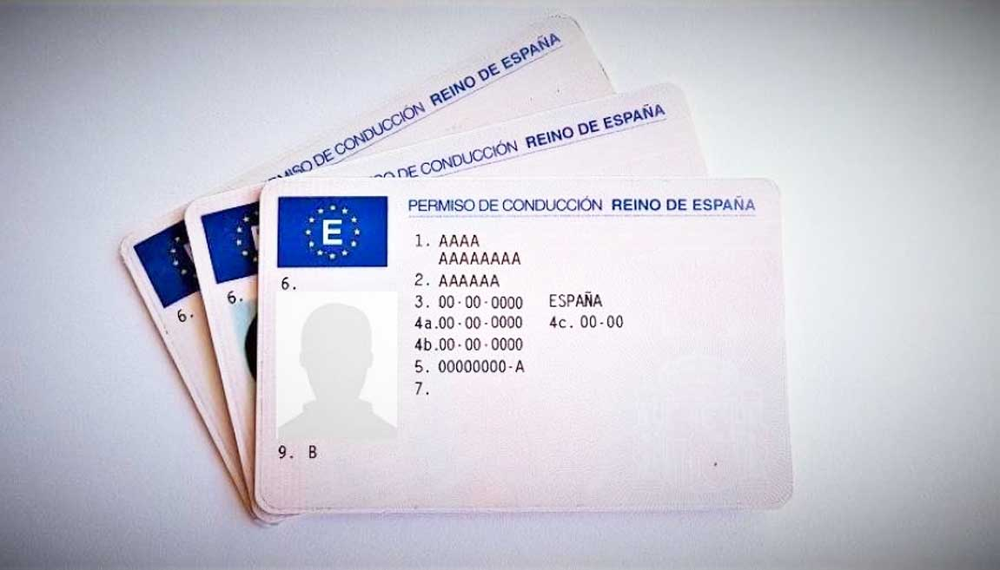

DUPLICADOS DE PERMISOS DE CONDUCIR

¿Has perdido tu permiso de conducir o te lo han robado? No te preocupes, en Gestoría Hellín te ayudamos a obtener un duplicado de forma rápida y sencilla. Nos encargamos de todo el proceso para que puedas volver a conducir con tranquilidad.
Realizamos los siguientes trámites:
- Presentación de la solicitud y documentación necesaria en la Jefatura Provincial de Tráfico.
- Obtención de un permiso provisional para que puedas conducir mientras esperas el duplicado.
- Entrega del nuevo permiso de conducir en tu domicilio o en nuestra oficina.
Recuerda que, según la DGT, para solicitar un duplicado de tu permiso de conducir, necesitarás:
- DNI o pasaporte original en vigor.
- Fotografía original de 32 x 26 mm en color.
- Tasa correspondiente.
- En caso de robo o extravío, es recomendable presentar la denuncia.
¿Necesitas ayuda con la documentación de tu vehículo?
¡Contáctanos hoy mismo! En Gestoría Hellín te ayudamos con transferencias, matriculaciones, bajas e informes de vehículos.
Solicitar Información